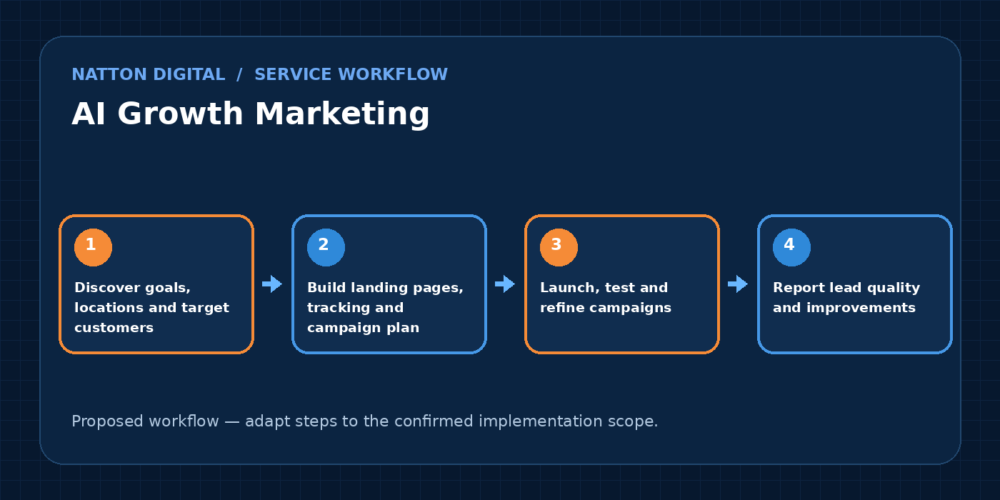

Get more relevant enquiries through search, landing pages and well-managed digital advertising.
✓ Clear implementation plan
✓ Appropriate integrations
✓ Human oversight
✓ Support after launch
Digital growth works best when every campaign supports a clear customer journey. Natton Digital can bring together search visibility, landing pages, paid campaigns and conversion tracking so prospects move from discovery to enquiry with fewer obstacles.
Rather than focusing only on clicks, this service should explain how campaigns are planned around business goals, lead quality, response speed and reporting. Clients should understand where their leads come from and which activities are worth improving.
This service is designed for businesses that need consistent, measurable lead generation.
Features are configured to match the agreed scope; not every integration is available on every provider or plan.
Research audiences, services, locations and demand before launching campaigns.
Create helpful, fast pages for the searches customers actually make.
Plan paid campaigns with transparent budgets and appropriate tracking.
Improve calls-to-action, forms, mobile usability and follow-up flows.
Connect website forms, ads and CRM records where consent allows.
Review leads, costs and outcomes with easy-to-read monthly reports.
This example shows a recommended path. Actual delivery depends on your tools, processes, permissions and agreement.

Healthcare: appointment enquiries and approved patient communications
Education: admissions enquiries and course landing pages
Professional services: consultation requests and qualified leads
No fixed budget fits every company. The plan should begin with demand, competition and a testing budget the business can sustain.
SEO is usually gradual. Paid ads can generate visits sooner, but results still depend on demand, offer and landing-page quality.
Use agreed measures such as qualified enquiries, booked consultations, cost per lead and CRM conversion stages.
Tell us about your current tools and challenge. We can outline a proposed solution, integrations and next steps.